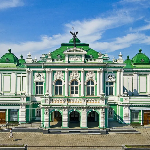
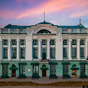

Омск — крупный город в Западной Сибири, административный центр Омской области. Это один из старейших городов региона, основанный в 1716 году. Омск расположен на слиянии рек Иртыш и Омь, что делает его важным транспортным узлом.
Омск — город с богатой и разнообразной историей, начинающейся в XVIII веке. Он был основан в 1716 году как военная крепость для защиты границ Российской империи от нападений кочевых племён. Первая Омская крепость находилась на месте слияния рек Омь и Иртыш. В XIX веке Омск стал административным центром Западно-Сибирского генерал-губернаторства, а затем — центром Степного генерал-губернаторства. В это время город начал активно развиваться, строились мосты, дороги, административные здания, в том числе знаменитый Омский кадетский корпус. В Омске в разные годы жил Фёдор Достоевский, отбывавший здесь ссылку, что значительно повлияло на его творчество. С началом XX века Омск стал крупным торговым и промышленным центром благодаря своему стратегическому расположению на пересечении торговых путей и строительству Транссибирской железнодорожной магистрали. В годы Гражданской войны город был временно столицей Белого движения под руководством адмирала Колчака. В советский период Омск превратился в важный промышленный центр, особенно во время Великой Отечественной войны, когда в город были эвакуированы многие предприятия. Развитие нефтехимической промышленности укрепило его экономическое значение. Сегодня Омск — один из крупнейших городов России, культурный и научный центр Сибири. Город славится своими театрами, музеями, историческими памятниками и уникальной архитектурой, которая сочетает в себе элементы старины и современности.
| Фотография | Описание |
|---|---|
|  | Омский академический театр драмы. |
|  | Музей изобразительных искусств имени Врубеля. |